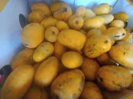

Mangos
El Mango Verde Proviene De Mexico.Esta Fruta Solo Es De Temporada
Puede Encontrar Este Mango En La Plaza Latina Y La Plaza Garland

Tambien Te Puedes En Contrar EL Mango Niño.Este Mango Sabe Dulce Y Es De Temporada Como El Mango Verde.
manEste Mango
